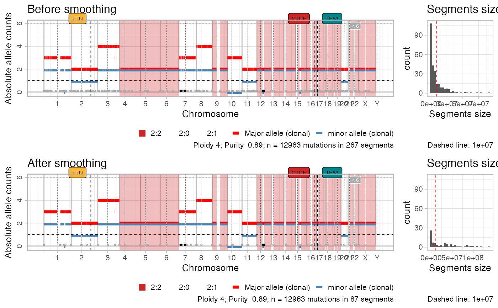

This functions join segments that have the same Major and minor alleles
(absolute copy number), and that are split by at most a certain number
of nucleotides Delta. The pre-smoothing copy number segments are
retained in the output computation.
smooth_segments(x, maximum_distance = 1e+06)
| x | An object of class |
|---|---|
| maximum_distance | The |
An object of class cnaqc, created by the init function.
data('example_dataset_CNAqc', package = 'CNAqc') x = init(example_dataset_CNAqc$snvs, example_dataset_CNAqc$cna,example_dataset_CNAqc$purity)#> [ CNAqc - CNA Quality Check ] #>#> ℹ Using reference genome coordinates for: GRCh38.#> ℹ Drivers are annotated, but 'gene' column is missing, using mutation location.#> ! Missing CCF column from CNA calls, adding CCF = 1 assuming clonal CNA calls.#> ℹ Input n = 13141 mutations for 267 CNA segments (267 clonal, 0 subclonal)#>#> ✓ Mapped n = 12963 mutations to clonal segments (99% of input)x = smooth_segments(x)#>#> ℹ Smoothing chr1: 37 segments.#> [1-24] [27-30] [31-33] [34-37]#> ℹ Smoothing chr10: 8 segments.#> [1-2] [3-4] [5-8]#> ℹ Smoothing chr11: 22 segments.#> [1-7] [8-9] [10-22]#> ℹ Smoothing chr12: 13 segments.#> [2-3] [12-13]#> ℹ Smoothing chr14: 2 segments.#> [1-2]#> ℹ Smoothing chr15: 9 segments.#> [1-5] [7-9]#> ℹ Smoothing chr16: 10 segments.#> [1-6] [8-10]#> ℹ Smoothing chr17: 10 segments.#> [4-5] [6-7] [8-10]#> ℹ Smoothing chr18: 8 segments.#> [1-2] [3-8]#> ℹ Smoothing chr19: 5 segments.#> [2-5]#> ℹ Smoothing chr2: 18 segments.#> [1-8] [10-12] [14-18]#> ℹ Smoothing chr20: 9 segments.#> [1-3] [4-9]#> ℹ Smoothing chr21: 2 segments.#> [1-2]#> ℹ Smoothing chr22: 3 segments.#>#> ℹ Smoothing chr3: 19 segments.#> [1-7] [8-13] [15-19]#> ℹ Smoothing chr4: 8 segments.#> [1-4] [5-8]#> ℹ Smoothing chr5: 6 segments.#> [1-2] [3-5]#> ℹ Smoothing chr6: 4 segments.#> [1-2] [3-4]#> ℹ Smoothing chr7: 46 segments.#> [1-5] [9-27] [36-38] [39-41] [43-46]#> ℹ Smoothing chr8: 18 segments.#> [1-4] [5-11] [12-18]#> ℹ Smoothing chr9: 3 segments.#> [1-2]#> ℹ Smoothing chrX: 6 segments.#> [1-2] [3-6]#> ✓ Smoothed from 267 to 87 segments with 1e+06 gap ...#> ℹ Creating a new CNAqc object. The old object will be retained in the $before_smoothing field.#> [ CNAqc - CNA Quality Check ] #>#> ℹ Using reference genome coordinates for: GRCh38.#> ℹ Input n = 13141 mutations for 87 CNA segments (87 clonal, 0 subclonal)#> Warning: [CNAqc] a karyotype column is present in CNA calls, and will be overwritten#>#> ✓ Mapped n = 13025 mutations to clonal segments (99% of input)#> #>#> Warning: Graphs cannot be horizontally aligned unless the axis parameter is set. Placing graphs unaligned.#> #>#> Warning: Graphs cannot be horizontally aligned unless the axis parameter is set. Placing graphs unaligned.